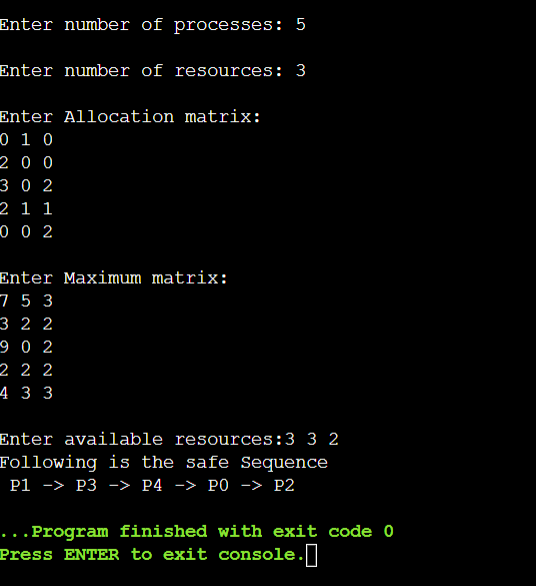

Banker's Algorithm for deadlock avoidance
The Banker algorithm, sometimes referred to as the detection algorithm, is a resource allocation and deadlock avoidance algorithm developed by Edsger Dijkstra. The name was chosen because the algorithm could be used in a banking system to ensure that the bank never allocated its available cash in such a way that it could no longer satisfy the needs of all its customers.
Approach:
When a new process enters the system, it must declare the maximum number of instances of each resource type that it may need. This number may not exceed the total number of resources in the system. When a user requests a set of resources, the system must determine whether the allocation of these resources will leave the system in a safe state. If it will, the resources are allocated; otherwise, the process must wait until some other process releases enough resources.
We need the following data structures, where n is the number of processes in the system and m is the number of resource types:
- Available. A vector of length m indicates the number of available resources of each type. If Available[j] equals k, then k instances of resource type Rj are available.
- Max. An 'n x m' matrix defines the maximum demand of each process. If Max[i][j] equals k, then process Pi may request at most k instances of resource type Rj .
- Allocation. An n x m matrix defines the number of resources of each type currently allocated to each process. If Allocation[i][j] equals k, then process Pi is currently allocated k instances of resource type Rj .
- Need. An n x m matrix indicates the remaining resource need of each process. If Need[i][j] equals k, then process Pi may need k more instances of resource type Rj to complete its task. Note that Need[i][j] equals Max[i][j] − Allocation[i][j].
Banker's algorithm comprises of two algorithms:
- Safety algorithm
- Resource request algorithm
Safety algorithm
It is a safety algorithm used to check whether or not a system is in a safe state or follows the safe sequence in a banker's algorithm
- Let Work and Finish be vectors of length m and n, respectively. Initialize Work = Available and Finish[i] = false for i = 0, 1, ..., n − 1.
- Find an index i such that both
a. Finish[i] == false
b. Need i ≤ Work
If no such i exists, go to step 4. - Work = Work + Allocationi Finish[i] = true Go to step 2.
- If Finish[i] == true for all i, then the system is in a safe state.
This algorithm may require an order of m x n2 operations to determine whether a state is safe.
Resource request algorithm
A resource request algorithm checks how a system will behave when a process makes each type of resource request in a system as a request matrix. Let Reques ti be the request vector for process Pi . If Requesti [j] == k, then process Pi wants k instances of resource type Rj . When a request for resources is made by process Pi , the following actions are taken:
- If Requesti ≤ Needi , go to step 2. Otherwise, raise an error condition, since the process has exceeded its maximum claim.
- If Requesti ≤ Available, go to step 3. Otherwise, Pi must wait, since the resources are not available. 3. Have the system pretend to have allocated the requested resources to process Pi by modifying the state as follows: Available = Available–Requesti ; Allocationi = Allocationi + Requesti ; Needi = Needi –Requesti ; If the resulting resource-allocation state is safe, the transaction is completed, and process Pi is allocated its resources. However, if the new state is unsafe, then Pi must wait for Requesti , and the old resource-allocation state is restored.
Advantages
- Allows mutual-exclusion, hold-and-wait, and no pre-emption conditions
- System guarantees that processes will be allocated resources within finite time
Disadvantages
- During processing, it does not permit a process to change its maximum need.
- All the processes should know in advance about the maximum resource needs.
C implementation of Banker's Algorithm:
